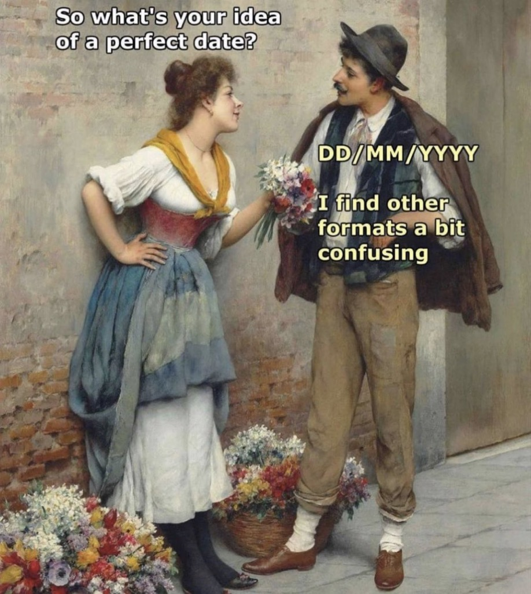

WILD 541 – Research Design Lab
Lesson 1: Introduction to R and Reproducibility
Mahdieh Tourani
2026-09-01
Outline
- Introduction and course overview
- Reproducibility and human error
- Introduction to R/RStudio
- AI policy
Introduction
Course overview
Objectives & Approach
Hands-on data exploration and visualization
A mix of lessons and exercises on basic analysis
Learning one tool for all tasks: R
Your job
- Explore.
- Work together.
- Ask questions.
- Do the exercises.
- Work with your own data.
Reproducibility and human error
Spreadsheets
Spreadsheets are ubiquitous, but they come with hidden risks in scientific research.
Auto-‘correct’

Auto-‘correct’ gone wrong
Example 1:
- Excel converted human genes and protein names to dates
- Still used and causing errors in published research

Why not Excel?
Example 2 — The Reinhart-Rogoff error
- Claimed average real economic growth increases when debt > 90% of GDP
- Mistakenly excluding 5 data points flipped the conclusion to a 0.1% decline
- A spreadsheet formula error; reviewed by thousands before discovery
Errors in spreadsheets are invisible as you cannot audit a click.
King of spreadsheets
Introduction to R/RStudio
Better tools are available
Using a better tool produces reproducible, auditable, sharable work.
Use R
Five steps for today:
- Install R
- Install RStudio
- Create a new project for “WILD541”
- Create a new R script for today’s class
Day01.R - Use R for basic operations

Some R benefits
- Environment for statistical computing and graphics
- Free (open-source)
- Used by many researchers worldwide
- Good documentation and community
- Continuously updated and expanded
- Can reuse existing scripts
- Runs the same each time ← this is reproducibility
Overview

Use R as a calculator
You can use R for simple and complex calculations using mathematical operators:
Tip
You can use a hash mark # to include comments, e.g., ”R as a calculator” in the above code. Any text after # is ignored by R. Comment liberally: it helps you remember and others understand your code.
Use R for summaries
You can use R built-in functions, e.g., summary(), to find summary statistics.
So, the mean of these data is 8.
Cite R
Tip
Citing software used in your analysis is good scientific practice.
Likewise, if you ever have a question about what version of R you are using, you could type the above in the R prompt and find the details.
Generative AI
AI for coding

Per university guidelines, use of generative artificial intelligence is not prohibited. However, instructors set the terms for their course.
Course AI policy
| Task | Status | Notes |
|---|---|---|
| Understanding concepts, debugging error messages, learning a package | 🟢 Encouraged | No disclosure needed for incidental use |
| Boilerplate & scaffolding (plot themes, cleaning templates) | 🟢 Allowed | Note it in a code comment |
| Choosing a model or test, study-design decisions | 🟡 Case-by-case | AI can help you brainstorm; the justification must be yours |
| Writing a full analysis script or its interpretation | 🔴 Not permitted | This is the competency being graded |
| Exams & independent problem sets | 🔴 Not permitted | Unless the assignment says otherwise |
Step 1: Understand Before You Prompt
Know your question and your data before you open the chat window.
Separate two different jobs: deciding what the analysis should do (your job) from typing the syntax (AI can help with this job).
Use AI to learn field conventions and relevant tools, not only to generate the final answer.
Sanity check: could you defend this line of code to your committee?
Warning
Watch out for vibe coding: accepting AI output you cannot evaluate, debug, or explain yourself.
Step 2: Choose Your Tool
| Tool | Best for |
|---|---|
| Conversational (Claude, ChatGPT) | Architecture questions, debugging, learning a new package |
| IDE assistant (Copilot-style) | Autocompletion, staying in flow |
| Autonomous agent (Claude Code, Cursor) | Multi-file edits, rapid prototyping |
Important
- Check university guidelines for approved AI tools
- Check AI model comparisons
- Restate key constraints in long sessions as most tools don’t remember perfectly
- Commit working code before a big AI-driven change, so you can always roll back
Step 3: Test Everything, Trust Nothing
Ask for tests before or during implementation.
Verify the test outputs.
Verify the results against something you understand, e.g., a plot or summary statistics.
Note
Despite AI doesn’t know your data, i.e., if samples are paired, clustered, or spatially autocorrelated unless you tell it, it will still confidently hand you a test.
If the code ran without errors, it does not mean it is correct.
Step 4: You Are Still the Scientist
The responsibility for AI-assisted code always belongs to the person who submits it.
“The AI wrote it” is not a defense for a mis-specified model, or results nobody else can reproduce.
Important
Rule of thumb: if you can’t explain a line at your defense, don’t turn it in
Privacy & data sharing
Never paste into a public AI tool: unpublished results, embargoed or data subject to data-sharing agreement.
Data from Tribal lands, communities, or partnerships: additional authorization applies, regardless of a public tool’s terms of service
Precise locations of sensitive, threatened, or poaching-vulnerable species are often legally restricted and the coordinates should be treated as any other confidential data.
When unsure: troubleshoot with a simulated or anonymized subset, and ask before uploading anything real
Important
If you can’t anonymize data meaningfully, don’t paste it into a public AI tool.
Disclosure and citation are mandatory
Every university policy agrees on disclosing AI use.
In code, use a header comment as below:
In a report, one sentence is enough. For the above example, you could write: “I used Claude (Anthropic) to debug syntax errors in my mixed-model code; model specification and interpretation are my own.”
Do vs Don’t
✔ Ask it to explain an error or an unfamiliar function
✔ Use it to learn a new package syntax
✔ Get a first draft of code structure
✔ Brainstorm modeling approaches, then justify your own choice
✔ Ask it to generate edge cases you might miss
✘ Submit code you can’t explain line by line
✘ Let it pick your statistical test without knowing why
✘ Paste/import unpublished data or sensitive coordinates into a public tool
✘ Skip verifying AI-cited functions or references
✘ Treat “it ran without error” as proof it’s correct